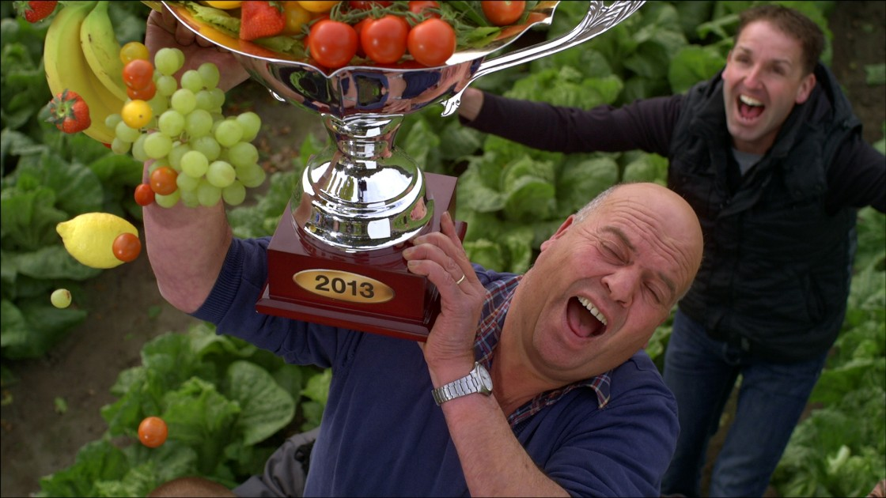
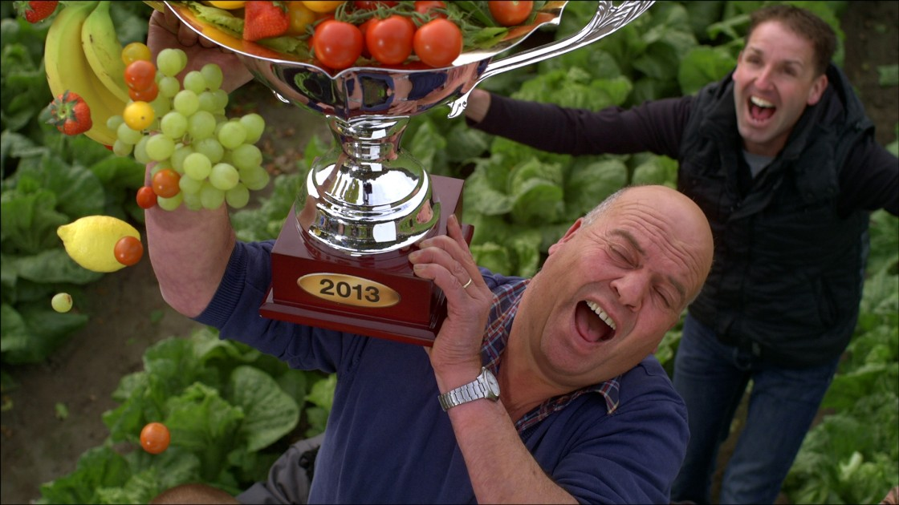

Some of our latest and favorite work
Case beschrijving: alleen voor boven de eerste foto
The importance of sports and sports clubs for a community is great.
But when it comes to giving donations, sportclubs are hardly taken into consideration.
They made a campaign to make sport, sport clubs and their people known, to call upon to the love we all feel for a particular club.
They collaborated with photographer / director Paul D. Scott, resulting in a audiovisual tour of sportclubs in the Netherlands: from billiards to swimming.
What’s your club?
What’s your club?
For De Zwaluwen Jeugd Actie THEY developed the campaign: ‘Je kunt mijn rug op!’ (‘I’ve got your back!’) that motivates children to raise money for their peers with Muscular Dystrophy or other physical limitations by taking action themselves.
As many as 1 in 8 employees in the Netherlands suffer from stress.
But the signs of stress are often neglected.
For the Dutch Ministry of Social Affairs, THEY developed a social media platform that helps acknowledge, recognize and diminish work induced stress symptoms: "Herken de druppel" (Recognize the Drop).

The platform was developed in collaboration with BKB. Take a look here: "Herken de druppel" (Recognize the Drop), and test yourself: "Check je Werkstress".
For National Birdweek THEY developed the TWIET-TWIET-WEEK. A Twitter Campaign in which 140 birds express themselves in 140 characters.

National Birdweek 2014 is organized by the Vogelbescherming, the Dutch organisation for bird protection. TWIET-TWIET-WEEK was started on May 17 by the always early Blackbird, seven days later, May 25, the Nightingale sang the last song:
"huuiet. hwiet. errr. LUU LUU LUU LUU LI LI"
"huuiet. hwiet. errr. LUU LUU LUU LUU LI LI"
THEY made a film for their very own champagne brand Zarb: Rosé Six³: A pink explosion of bubbles.
And if you’re looking for a reason to drink Champagne?
Maybe it’s Tuesday?
The new collection Zarb Champagne Rosé Six³ means 6 different colors of neck labels combined with 6 different labels and 6 different coiffes (that thingy on top of the bottle) delivering a staggering 216 different bottle designs.
Brought to live by Amsterdam based visual artists and director’s duo INE & SANNE.
Music by French producer Habstrakt.
Brought to live by Amsterdam based visual artists and director’s duo INE & SANNE.
Music by French producer Habstrakt.
LIDL did it again: best quality, best price. Their detergent FORMIL has proven itself to be the whitest washer in the country.
Therefore THEY decided to do the laundry and communicate this achievement in the only way THEY thought would be best: printed in bold black on the whitest white.
The housing market seems like a jungle nowadays. Therefore THEY, together with their good friends from MOMKAI, developed several TV commercials and an online campaign for Aegon in which everything revolves around current housing questions. All in line with the mission of Aegon: helping people make conscious decisions for their financial future.
Lidl had great news to announce: The best Supermarket in Fruit & Vegetables. For the fourth time in a row!
THEY made and directed a TV campaign that gives credit where credit is due.
Thank you farmers, growers and hard working Lidl employees.
Groenteteler
Fact: we have to work longer. And the best way of ensuring a good future of this prolonged career is to take action on the workplace. To be proactive, take initiative.
But what is pro-active behaviour?
THEY conducted an experiment…
Trailer
Some videos are so bad, they're actually good.
Now there's a website that finds the very worst-rated videos on YouTube.

Please have a look at http://www.boootube.com/
Have you ever gone on holiday with a friend or new lover, and then halfway through realized you should have travelled to different continents?
Taking a holiday together is a big step in any relationship.
Where do you go for dinner? How do you divide money? How closely do you stick to 'the plan.’ Small personality difference can become boulder-sized barriers on the road to a good holiday.
On the other hand, sometimes opposites attract. After all, every follower needs a leader. And every group needs that one nerdy member who remembers to make reservations.
Now there's a way to 'know before you go.’
Please have a look at www.schipholreismaatjes.nl
When are people likely to think about intestinal cancer and other digestive problems?
On the toilet!
So we enourage people to save a few coins for the cause every time they visit the loo.
Zarb Champagne introduces its new cuvee, Champagne Rosé six³ de saignee.
Zarb Champagne Rosé six³ is an unconventional champagne that titillates the senses:
Zarb’s eccentric originality is the development of the “six³”: Six different coiffes, six different sleeves and six different labels, which deliver an exceptional whole of 216 different bottle designs – exponentially ensuring the likelihood of a pleasurable visual and taste experience.
So let’s celebrate and kiss the luscious lips of the tasty flavour bomb that is Zarb Champagne Rosé six³.
Zarb Champagne Rosé six³ is an unconventional champagne that titillates the senses:
Zarb’s eccentric originality is the development of the “six³”: Six different coiffes, six different sleeves and six different labels, which deliver an exceptional whole of 216 different bottle designs – exponentially ensuring the likelihood of a pleasurable visual and taste experience.
So let’s celebrate and kiss the luscious lips of the tasty flavour bomb that is Zarb Champagne Rosé six³.

For Aegon retirement insurance: We ran this print ad on the last day of the Dutch queen's reign.
translation:
Bye bye, your Majesty.
You worked till your 75th birthday.
Strong, determined, and deeply involved.
And now?
Finally more time for family.
More room for sculpting and painting.
More sailing trips on The Green Dragon.
Perhaps best of all:
Freely galloping through the surf.
The pounding of hooves.
Suds of seafoam blowing past your ears.
No Golden Coach, no grand speeches,
No mediators and no advisors.
No throne, no crown, no more protocol.
Time for yourself. Thank you for everything.
Bye bye, your Majesty.
You worked till your 75th birthday.
Strong, determined, and deeply involved.
And now?
Finally more time for family.
More room for sculpting and painting.
More sailing trips on The Green Dragon.
Perhaps best of all:
Freely galloping through the surf.
The pounding of hooves.
Suds of seafoam blowing past your ears.
No Golden Coach, no grand speeches,
No mediators and no advisors.
No throne, no crown, no more protocol.
Time for yourself. Thank you for everything.
Not everybody likes to look at their poo. We had to change that. After all, inspecting your poop is the best way to spot early signs of intestinal cancer and other problems in your digestive system. So we made the 'poop-checker', a mobile website that helps people make sense of their stool.
The website was advertised on posters that hung where? In public toilets. Talk about a captive audience!
Vodafone offers free extra MBs of data for its prepaid users. So now, you really can share everything. In this tribute to oversharing, we found the most trivial tweets on the web and memorialized them on billboards, full-page print ads, and radio commercials.
Most schools forbid social media in the classroom because they feel it distracts from the lesson. But together with Amsterdam middle school Het 4e Gymnasium, THEY developed a way to use social media as a tool for education.
Named by Creativity Online as one of the 10 best interactive ideas of 2012.
Named by Creativity Online as one of the 10 best interactive ideas of 2012.
visit the pages:
www.facebook.com/pages/Rise-and-fall-of-the-Soviet-Union
www.facebook.com/MagellansVoyage
www.facebook.com/Fashion1950Now
www.facebook.com/20thCenturyInventions
www.facebook.com/pages/Rise-and-fall-of-the-Soviet-Union
www.facebook.com/MagellansVoyage
www.facebook.com/Fashion1950Now
www.facebook.com/20thCenturyInventions
THEY changed the boring task of planning for your pension into an interactive game that visualizes your future.
Screenshots from the website speeljetoekomst.nu
You keep your life on your phone.
So losing your phone is like losing a part of yourself.
In this campaign for Vodafone Cloud, real-life lost phone stories are reconstructed in the over-the-top style of 'I should be dead' TV shows.
So losing your phone is like losing a part of yourself.
In this campaign for Vodafone Cloud, real-life lost phone stories are reconstructed in the over-the-top style of 'I should be dead' TV shows.
TVC 'Toilet'
Many people, including Dutch, don't associate the Netherlands with nature. After all, it's the most densley-populated country in Europe. But only minutes from the skyscrapers of Rotterdam and The Hague, lie spectacular dunes, forests, and wetlands. Dutch National Parks invites people to 'Komt dat zien' (Come check this out).
Whether it's losing one's car keys or inventing a new sandwich, Zarb toasts to the trivial. And breathes new life into the champagne category.
THEY launched this brand in 2008. It can now be found in high-class clubs in Paris and LA, and questionable establishements in Amsterdam.
Every year THEY bring out a new line of bottles.
Every year THEY bring out a new line of bottles.
THEY changed the way social media data are used. Not to connect with people, but to avoid them. Welcome to 'antisocial media'.
We manipulated data from multiple social media to give real-time estimates of crowd levels in Amsterdam's four main shopping districts.
Amsterdam BosTheater (Amsterdam Forest Theater) is located in the middle of the woods. So when it came time to develop a new identity for the theater, we made posters from wood-block prints, one of the oldest graphic techniques in the world.

A Vodka for the new generation of Indians. The generation that refuses to resign to the expectations of their social class. The generation that dares to 'Give it a Shot'. Just like Bruce Willis did in Die Hard!
Wherever the football goes, it unites. What better way to show this than from the perspective of the ball itself? This campaign is for the non-profit organization, More than Football, whose mission is to encourage social integration via sports.

The Dutch government wants every able body to work. Including young people with disabilities. So THEY needed to change people's perception of young people with disabilities.
THEY set up an online TV channel to make inspiring video reports of these young people out in the workforce. The station itself was staffed by young people with disabilities.
Visit omroepmik.nl or watch the casefilm below (Dutch language)
THEY set up an online TV channel to make inspiring video reports of these young people out in the workforce. The station itself was staffed by young people with disabilities.
Visit omroepmik.nl or watch the casefilm below (Dutch language)
For the #1 team we made a #1 hit out of favorite FC Ajax fan song.
People don't tend to think of the discount supermarket Lidl as carrying preeeeemium items.
We helped change that.
cinema commercial 'Vivaldi'
To celebrate Aegon's years of sponsorship of professional Dutch speed skaters, we invited renouned poets to write odes to the athletic poetry that happens out on the ice.
Ingmar Heytze recites 'An Ode to Mark'
Lots of unemployed or underemployed people stay that way simply because they don't believe they have anything to offer. But everybody can do something.
We wanted to change people's outlook from focusing on what they can't do, to realizing what they can do. This mentality is expressed in one simple, powerful line: ik kan (i can).
We wanted to change people's outlook from focusing on what they can't do, to realizing what they can do. This mentality is expressed in one simple, powerful line: ik kan (i can).

Bronx has always managed to come out with the right shoes at the right time. So THEY created a campaign that’s every bit as stylish as the shoes. A campaign that’s 'So Today'.

These posters were hung in stores across Europe.
Videoclip for 'Electric', from Amsterdam pop band
Go Back to the Zoo.
The track reached top-10 on European charts.
Go Back to the Zoo.
The track reached top-10 on European charts.
made with director Patrick Lowerse
How do you make an established and conservative insurance company exciting? By taking an iconic logo that’s belonged to the company since 1895, and making it fly.
television commercial
Coffee Company is Holland's largest chain of coffee shops (real coffee shops, not hash bars). As a popular meeting place for students and young professionals, CoffeeCompany strives to meld the online world with the offline world.

THEY designed a book for the real-estate developer Lingotto. In keeping with the developer's philosophy to re-use old buildings, the inside of the book is entirely printed on old paper that was used for test prints. The covers are made from orange juice and milk cartons.
This integrated campaign helped people lose their fear of using internet on their phone while abroad.
Madame Tre Sesti is an online forutune teller who reads your social media. She's the digital personification of Vodafone 360, a service that lets you see all your social media in one place.
Done together with Achtung!
The corporate finance world is full of boring 'deal' ads that brag about how much money changed hands. Instead, we show where the money goes and how it benefits ING's clients.
print ad
Most funerals are boring. That's because people don't like to think about their own death, let alone plan for it. So we asked people across Holland to plan their perfect funeral. With its customized services, Monuta can 'pimp up' your death.
TVC 'Frank'
Trust in the finacial sector is at an all time low. The only way to earn trust back is simple...honest. We kicked off with a documentary on national television. Followed by a TV, outdoor, and print campaign

The campaign followed the real-life stories of people and what they planned to do 'later in life'.
Never seem to find time to think about your future?
Look at it this way: the day is full of free moments.
Look at it this way: the day is full of free moments.
TVC 'Bike Stop'
Custom financial advise: It's like an army of little experts slaving over your every financial detail.

Sometimes you feel outsmarted by your smartphone. For those moments, Vodafone has the Smartphone Crew, a crack team of nerds who can solve every technical issue for you.
TVC 'Insomnia'
We're all so busy with work. Sometimes we don't stop to think why it is we work in the first place. This campaign for 365 helps remind people why every day is important.
This campaign featured a new commercial every day for a month. Every day, a new point to ponder about work. Below are two of the commercials.
Exploring is usually something you do while travelling. Not at the airport. But when New Delhi Airport opened its new Terminal, filled with stores and great restaurants, we helped people see the airport as a destination in itself.
brand film
Roland van der Vorst, founding strategic partner at THEY, wrote a book about Hope.

In India, advertising for alcohol is extremely restricted. So alcohol is promoted via surrogate products or sponsored events. The 'Monsoon Project', is a tour of music events that travels across India, celebrating the path of the famous rain season.


HERKEN DE DRUPPEL


 

The Robojob Experiment